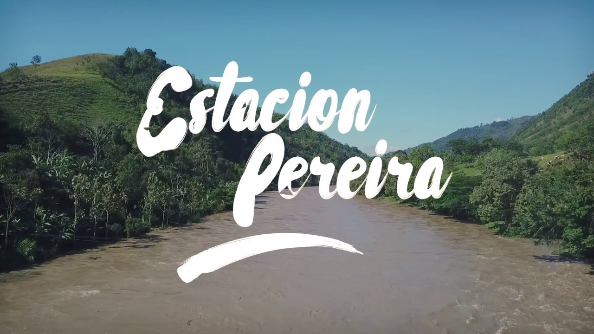
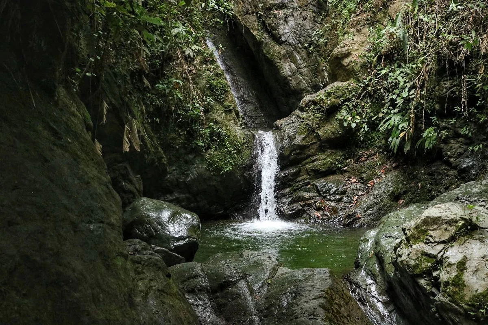
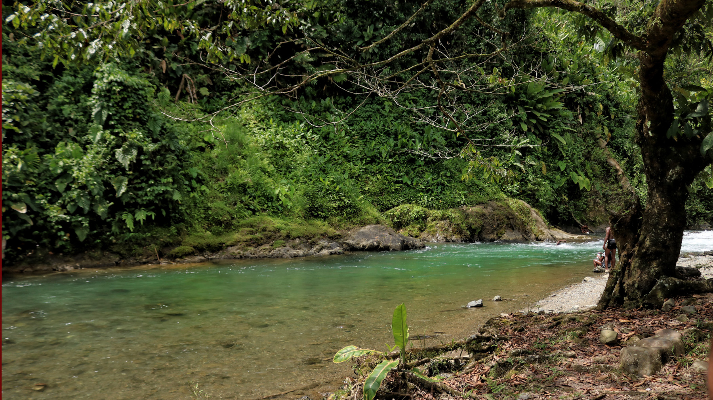

Estación Pereira
Centro Histórico, Pereira




Descripción
La Estación Pereira es una vereda ubicada en el municipio de Marsella, en el departamento de Risaralda, Colombia. Se encuentra aproximadamente a 40 kilómetros de la cabecera municipal, siendo una de las zonas más apartadas y pintorescas del municipio .
Características
- 🌄 Vistas panorámicas
- 🌿 Naturaleza exuberante
- ☕ Cultivos de café
- 🚶♂️ Senderos rurales
- 🏞️ Paisaje cafetero
- 🌳 Flora diversa
- 🦜 Avistamiento de aves
Horarios y Precios
Acceso:
Acceso libre
Días:
Todos los días
Entrada:
Gratuita
Nota:
Se recomienda visitar durante el día
Restaurantes cercanos
-
La Estancia
- Ubicación: Marsella
- Comida típica colombiana
- Ambiente acogedor
-
La Molienda Café
- Ubicación: Marsella
- Café bar
- Snacks y bebidas locales
-
Restaurante Fonda La Bodega
- Ubicación: Km 10 vía Pereira-Marsella
- Comida típica ahumada
- Vista al paisaje cafetero
Alojamientos cercanos
-
Hotel Carmen
- Ubicación: Marsella, Risaralda
- Cerca de la plaza principal
- Alojamiento sencillo y cómodo
-
Finca El Encuentro - Eje Cafetero
- Ubicación: Vereda La Oriental, Marsella
- Estilo rural con jardín y piscina
- Vista a la montaña
-
Hotel Spa La Colina
- Ubicación: Km 6.5 vía Pereira-Marsella
- Servicios de spa y sauna
- Tina de hidromasaje